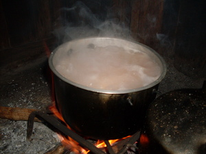

uwang 
/ʔuaŋ/
v_rt.
“steam”
n.
steam
Eng. steam; vapor
Tag. singáw; alingásaw
Ceb. alisngaw
Ilo.: sengngaw
OCM: Ethnophysics (822)
DDP: Solid, liquid, gas (1.2.3)
Online dict status: -
Usage level: B
v.
for something (eg-uwang, mig-uwang/in-uwang, uwang, agent, eg><ø-) to give off steam
Ka sinubba ni Inè su eg-uwang e.
Mother's cooked is steaming.
Eng. give off steam; steam
OCM: Ethnophysics (822)
DDP: Solid, liquid, gas (1.2.3)
Online dict status: -
Usage level: B
1.
v.
for someone (egpekeuwang, nekeuwang, egpAkA-) to clear out (igpekeuwang, impekeuwang, reason, igpAkA-)
Cult. e.g. one's throat
Kenad e egpekeuwang su napawaan key ka egkekanta.
I don't have voice because we sang until dawn.
Eng. clear out
Online dict status: -
Usage level: M
Updated by: RJH,AAA,QDL,NJK,RAA
Last updated: 26/Oct/2009
This page last updated: 19/May/2012
Copyright © 2009-2010, Matigsalug Language Christian Association, Inc